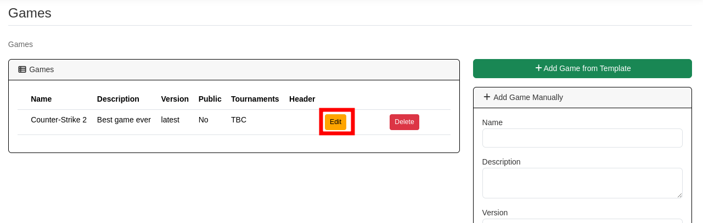
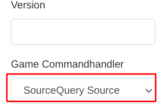
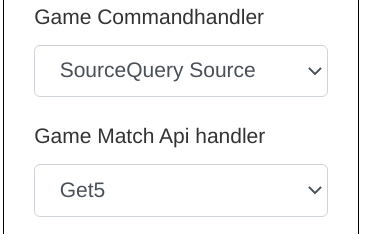
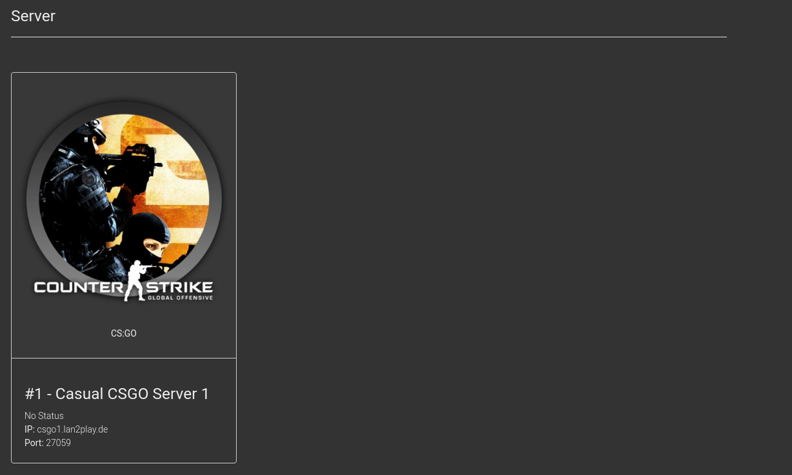
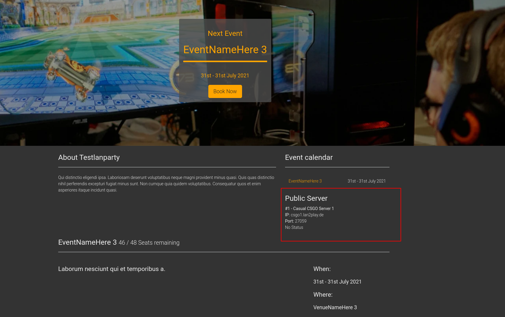
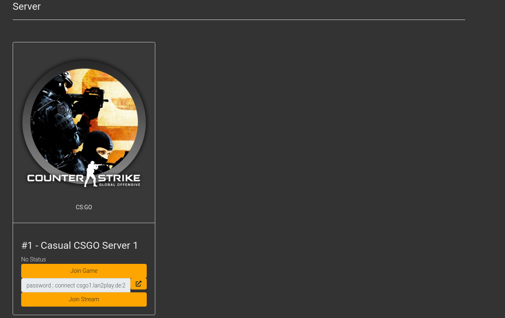
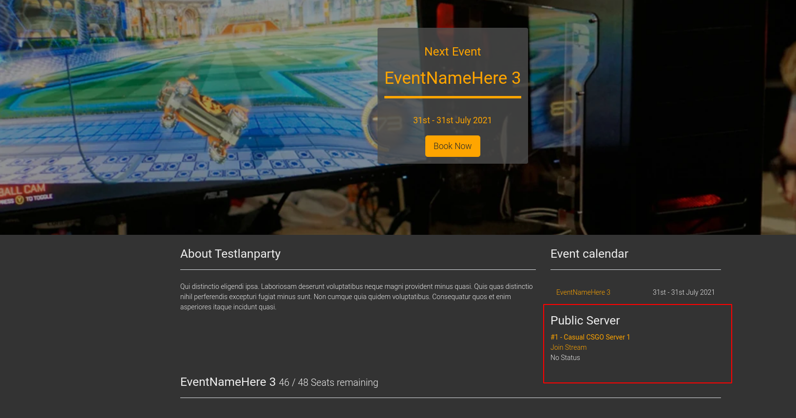

Games
Introduction
You can create games which will be available in your event, your tournaments and your matchmaking. You are then able to add gameservers for each game and for a few games you can show serverstats / remote control the servers from eventula or even automate your matchmaking or tournament.
Note
If you are planning to use the full featureset for the supported games, we recommend to use the Add Game from Template feature to add the game.
Add Game from Template
Lets create a game from a template, which depending on the game comes with preconfigured settings for it.
Go to your Admin Panel to the Games Section.
Over the right you can find the Add Game from Template Button. Kick it.
{kind=link}
You will now get a list of all supported games with their Game Commandhandler and Game Match Api handler (and a few parameters), where you can click Deploy on the one you want to deploy:
{kind=link}
You will get a success message / error message on the bottom of the page.
Note
The Game Templates are designed to not overwrite your already existing games. If you removed or renamed some of the GameCommands or GameCommandParameters inside the game, they will be added to your existing game, if deployed again. If you want to deploy an additional copy of the game, change the name of your existing game to something else than in the template and deploy it again.
Your Game should now appear in the Games Section of your admin menu, where you can edit the settings and add gameservers to it which you have to do, to fully use the available features.
Note
By default it is intended that the games public visibillity is disabled, but this is currently not working (https://github.com/Lan2Play/eventula-manager/issues/620)
{kind=link}
Add Game Manually
Lets create a game! go to your Admin Panel to the Games Section and you can add your game in the Add Game area.
To use the basic features like manual tournaments you have to fill in a name and you can add a description, a version if you want to.
Its recommended to add a Thumbnail Image and a Header Image, they will be shown on the tournaments / matches.
{kind=link}
If you want to enable the possibilities to show the status of the later created gameservers on either the events page or the public page or you want to remotly control the gamservers via eventula you have to select a Game Commandhandler
You can find the available ones here
{kind=link}
If you want to enable the possibilities to manage fully automated tournaments or fully automated matchmaking you have to set Game Match Api handler as well as the corresponding Game Commandhandler.
You can find the available Game Match Api handlers ones here
{kind=link}
For an explanation of the fields Connect Game URL, Connect Game Command and Connect Stream URL take a look on the Frontend Gameserver Features section of the documentation.
Note
For fully configured examples of the automated Tournament / Matchmaking take a look on the Add Game from Template section.
Press Submit to add the Category.
You will then be redirected to the detailed / editing /upload view.
Edit Game
To edit a game, go to your Admin Panel to the Games Section and klick on Edit on the game entry in the Games area.
{kind=link}
You will then be redirected to the detailed / editing /upload view of the game.
You can edit the games parameters in the Edit Game Section. Additionally to the parameters you had available in the Add Game step, you can set the public visibillity of a game (Currently not working!) and a Match start command that is needed for the automatic tournament / matchmaking (see the Add Game Manually section of the documentation or for a fully working example of the automated Tournament / Matchmaking take a look on the Add Game from Template section of the documentation.)
For an explanation of the fields Connect Game URL, Connect Game Command and Connect Stream URL take a look on the Frontend Gameserver Features section of the documentation.
The changes can be saved with a click on the Submit Button in the Edit Game Section.
In the bottom you can now add Game Servers to the game. Please look into the following Gameservers section of the documentation.
Gameservers
Add Gameserver
To show gameservers on your event live page, and to enable the automatic Matchmaking / Tournament Features, you can add Gameservers to any game. Lets create a game server! go to your Admin Panel to the Games Section and klick on Edit on the game entry in the Games area on which you want to add a gameserver.
In the bottom you can now add Game Servers to the game in the Add Game Server section:
{kind=link}
You have to specify at least the
Name, theAdress(or ip), theTypeand theGame Port.If you select the
TypeCasualandServer is Enabled, the Server will be shown on your events live page.If you select the
TypeCasual,Server is EnabledandServer is Publicthe Server will be shown on your events live page and your homepage.If you select the
TypeMatchandServer is Enabledthe Server will be used for Matchmaking and tournaments if you enable it on the game itself.If your Server needs a connection password, you can specify it in
Game Password.Some games support streaming (like CS:GO). To enable your users to stream the game, you can enter the streaming port (eg. Sourcetv) in the
Stream Portfield.If you use a game with a supported Commandhandlers (See the Add Game Manually section in the documentation), you should add the
RCON Port(mostly same as the game port) and theRCON Passwordto enable status checking or (automatic) remote controlling of the Gameserver.
Edit Gameserver
Frontend Gameserver Features
The basic view of a Gameserver with no Commandhandler selected looks like this on the event live page:
{kind=link}
and like this on the Homepage:
{kind=link}
Some Games support joining to a server via a URL or a command. To enable that you have to fill the fields Connect Game URL, Connect Game Command and Connect Stream URL in your corresponding game.
You can use variables in these fields which get resolved for the end user.
Use Variables in commands like this: {>gameServer}
If the used variable contains an object the Properties can also be accessed: {>gameServer->address} or {>gameServer->rcon_port}
If you need the parameter as an optional parameter (for example the password for the connect url/command: {>§gameserver->password}
The available variables are:
{>gameServer->address}{>gameServer->game_port}{>§gameServer->game_password}{>gameServer->stream_port}
Examples:
So for example your
Connect Game URLfor a steam game could look something like that:steam://connect/{>gameServer->address}:{>gameServer->game_port}/{>§gameServer->game_password}Also for example your
Connect Game Commandfor a steam game could look something like that:password {>§gameServer->game_password}; connect {>gameServer->address}:{>gameServer->game_port}Also for example your
Connect Stream URLfor a steam game could look something like that:steam://connect/{>gameServer->address}:{>gameServer->stream_port}
If you set everything, your Server looks like this in the event live view:
{kind=link}
And like this on your Homepage:
{kind=link}
if you set the Commandhandler and the RCON password and the RCON Port on your game the status of your Server is shown in both views and in the Admin Area:
{kind=link}
{kind=link}
{kind=link}
GameCommands
GameCommandParameters
Details
Game Commandhandler
The currently available Commandhandlers are:
SourceQuery GoldSource (supported games: full support for all HL1/HL2 games and mods )
SourceQuery Source (supported games: CS:GO, Minecraft only commands | no status support)
Maniaplanet XRPC (supported games: Trackmania nations, and all new maniaplanet games )
Game Match Api handler
The currently available APIhandlers are:
Get5 (supported games: CS:GO with the Get5 Plugin from Splewis and the get5_eventula_apistats plugin)
PugSharp (supported games: CS2 with the PugSharp Plugin)